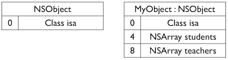
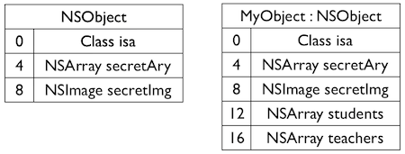

YYModel笔记<一>
YYEncodingGetType
YYEncodingType YYEncodingGetType(const char *typeEncoding);
这是一个C方法，我在Github上问了作者，这里使用C语言的原因是执行速度更快
YYClassIvarInfo
看YYClassIvarInfo这个类，它包含了一个实例变量的多个信息
@interface YYClassIvarInfo : NSObject
@property (nonatomic, assign, readonly) Ivar ivar; ///< ivar opaque struct
@property (nonatomic, strong, readonly) NSString *name; ///< Ivar's name
@property (nonatomic, assign, readonly) ptrdiff_t offset; ///< Ivar's offset
@property (nonatomic, strong, readonly) NSString *typeEncoding; ///< Ivar's type encoding
@property (nonatomic, assign, readonly) YYEncodingType type; ///< Ivar's type
Ivar ivar
Ivar是表示实例变量的类型，其实际是一个指向objc_ivar结构体的指针
typedef struct objc_ivar *Ivar;
其定义如下：
typedef struct objc_ivar *Ivar;
struct objc_ivar {
char *ivar_name OBJC2_UNAVAILABLE; // 变量名
char *ivar_type OBJC2_UNAVAILABLE; // 变量类型
int ivar_offset OBJC2_UNAVAILABLE; // 基地址偏移字节
#ifdef __LP64__
int space OBJC2_UNAVAILABLE;
#endif
}
ivar_offset表示基地址偏移字节。在编译我们的类时，编译器生成了一个ivar布局，显示了在类中从哪可以访问我们的 ivars 。看下图:

上图中，左侧的数据就是地址偏移字节，我们对 ivar 的访问就可以通过对象地址 ＋ ivar偏移字节的方法。但是这又引发一个问题，看下图:

我们增加了父类的ivar，这个时候布局就出错了，我们就不得不重新编译子类来恢复兼容性。
而Objective－C Runtime中使用了Non Fragile ivars，看下图:

使用Non Fragile ivars时，Runtime会进行检测来调整类中新增的ivar的偏移量。 这样我们就可以通过对象地址 ＋ 基类大小 + ivar偏移字节的方法来计算出ivar相应的地址，并访问到相应的ivar。
ptrdiff_t offset
ptrdiff_t是C/C++标准库中定义的一个与机器相关的数据类型，通常用来保存两个指针减法操作的结果。offset即基地址偏移字节。